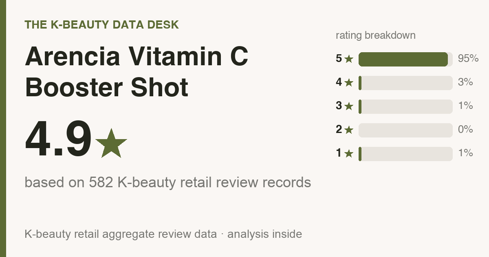
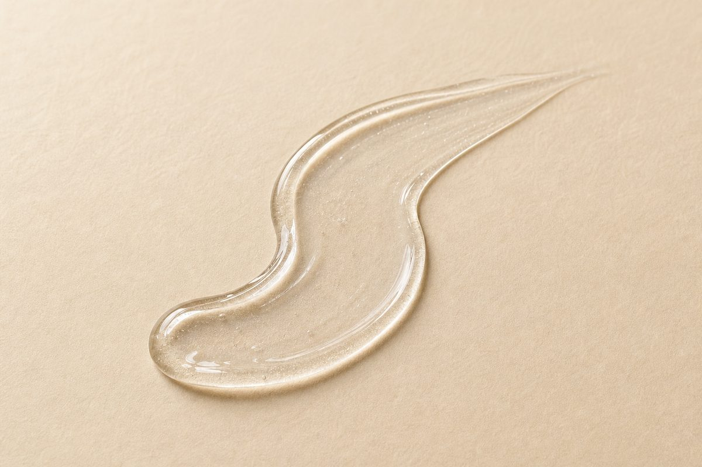
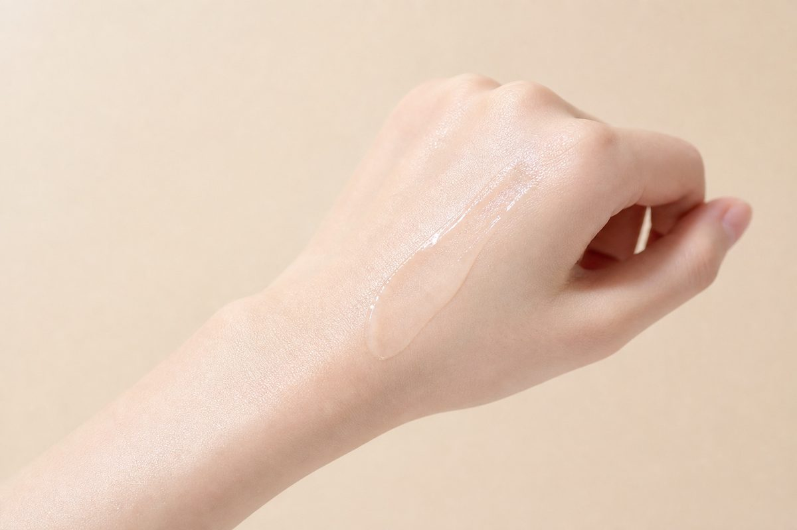

Updated July 2026. There are 582 real Olive Young reviews on this thing, and I sat with 500 of them line by line. Everything below is the crowd talking. I didn't write, buy, or translate a single review, and I'm not guessing at any of it.
Bookkeeping: the store links way down at the bottom pay me a small cut if you buy through them. Your price doesn't budge, and neither does my verdict.

Short version: 4.9★ (95% five stars) across 582 Olive Young reviews, with buyers rating it strongest on fine lines (48%), hydration (27%), soothing redness (25%). The crowd is combination and dry skin (skip list further down).

Korea shelf price on the day I pulled data (2026-07-12): ₩27,900 (≈ $20 at exchange rates) on Olive Young Korea. That is a Korea number, not a US quote. US retail is a separate market, usually pricier, and it drifts, so the buy links tell you what it costs where you live today. The repurchase line is the one that gives me pause. 1% of reviewers said they bought it again. People enjoyed it and then didn't feel any tug to restock. That's a curiosity buy, not a shelf staple. If budget is what's deciding this for you, a basic for the look of aging will handle the same brief for less.
Arencia Vitamin C Booster Shot sells hard on Olive Young, the giant chain Koreans actually walk into for skincare. Search it in English, though, and you get near-nothing useful. Maybe a TikTok that tells you the packaging is cute. So I went through what buyers wrote and pulled out the parts a friend would tell you before you hand over money.
The average is 4.9 stars, and no, it isn't three superfans hoisting the number. 95% of reviewers gave it the full five stars (that's nearly 9 in 10), and 98% landed at four or five.
Read a stack of them and the same praise keeps surfacing. People love fine lines.
So what's it actually good at? By the numbers:
Star ratings are the headline; the buy-or-don't information is buried under it. So I worked through the 500 most-helpful reviews and tallied what people kept circling back to. A math note before the list: everything in this section comes from those 500, while the star ratings and skin-type splits above come from the full base.
Inside the 5-star pile, the recurring notes are fast absorption / fresh finish, no sticky or heavy feel, zero irritation, and hydration & dewiness.
For reactive skin this section outranks the star rating, full stop. Among reviewers who brought it up, 58% said it felt gentle with zero sting, and 2% reported any irritation at all. As reassuring as this kind of data gets. Your skin is still your skin, though, so run a couple of days of patch tests along your jaw before you commit the whole face.
Reviewers skew combination (62%), dry (32%), oily (7%), so their skin is the skin this review data describes (it leans combination and dry skin). Match that and you're reading a crowd that's relevant to you. Don't match it and the product may still work fine; it just means fewer people with your skin type weighed in, so discount accordingly.
Genuinely worth it for you if:
Who I'd gently steer away (or at least tell to go in eyes-open):
Nothing works for everyone. If one of these is the actual job you're shopping for, here's the category I'd send your money toward, with rough US prices so you know the damage up front:
Treat those as research leads, not ranked picks. I only put my name behind a product after reading its reviews, so check them yourself and match on results, then price.
I read reviews, not lab sheets, so fragrance here is not verified and I'm not going to pretend otherwise. The 30-second check that actually settles it: pull up the buy page, Ctrl/Cmd-F the ingredient list for "fragrance / parfum" and "alcohol denat." If either shows up and your skin reacts to it, skip. Reviewers called it gentle, but for reactive skin the label decides, not a star rating.
Routine order is where people fumble this format, so, plainly:

No chemistry degree required, just the gist of why it behaves the way reviewers describe:
It's a strong match. 62% of reviewers had combination skin, the single biggest group, so if that's you, the odds are in your favor.
Mostly yes. 58% of reviewers said it felt gentle with no sting. Still patch-test if you react easily, but the irritation rate is genuinely low.
Reviewers describe it as fast-absorbing and fresh rather than greasy, so the glow reads more like dewy hydration than a heavy sheen. One honest gap: this is a Korean review base, so it can't tell you how that finish reads on deeper skin tones specifically, and I won't invent a verdict the reviews don't contain. Here's the move instead: apply a little to one cheek, then look at it in daylight AND in a flash selfie before you commit. A dewy formula can read shiny on any tone under a flash, so the only honest answer is to see how it behaves on your skin.
Honestly, probably not. Normal skin will like it but won't need it, and if the product you own already works for you, this won't change your life. It's a genuinely nice one if you're starting fresh or replacing something you don't love, but “I already have one that works” is a perfectly good reason to skip.
Buzz is cheap; coming back is expensive. 1% said they repurchased and 9% reviewed after a month or more, and reviewers most often rate it best for fine lines (48%). That re-buy number is modest, so the honest read: it does its one job, it just doesn't send anyone sprinting back for a second bottle.
It's one of the better-reviewed picks in its category, though repeat-buys are modest, so treat it as a try-it, not a staple. Worth it if its top reviewer-voted strengths line up with what your skin actually needs, and you're not buying it for the hyped actives.
I read the reviews, not the ingredient list, so I can't confirm fragrance status. If you're fragrance-sensitive, patch-test on your jaw for 24–48h first.
No made-up dupes here. I only vouch for something once I've read its reviews the way I read these, so shop the same category by what reviewers say it does best, then compare price.
Two solid lanes: Amazon (pick a listing sold by the brand's official store or by Amazon itself, not a random third-party seller) or Olive Young's own US store at us.oliveyoung.com. Heads-up on the latter: since mid-2026 US shoppers get a smaller US-only catalog, so if it's missing there, Amazon usually has it. Outside the US, Olive Young Global ships to the UK, Canada, Australia, Singapore and more. Links are below.
For combination and dry skin chasing fine lines and hydration, Arencia Vitamin C Booster Shot is an easy yes. It does the thing it set out to do, and the people it was built for are visibly happy. If that's your lane and you don't already own something you love, buy it without much agonizing.
The affection also outlasts week one. 9% of the reviews I read landed after a month or more of use, so this isn't a honeymoon product.
Not your match? Here are other reviews I built the same way, all the numbers and who-should-skip included:
Disclosure: This article contains affiliate links. If you buy through them, I may earn a small commission at no extra cost to you.
If you're in the US:
Outside the US (UK, Canada, Australia, Singapore, NZ and more):
On prices: the only number I can vouch for is the dated Korea shelf price above (pulled 2026-07-12). Stores reprice constantly and bundles muddy comparisons, so always compare the per-item price at the link before you buy.
← All K-Beauty Data Desk reviews · Best-seller rankings · About & methodology
Published by The K-Beauty Data Desk · Data refreshed 2026-07-12. The reviews are 100% real Olive Young buyers. I read the reviews and made sense of them for you; I never wrote, bought, paid for, or translated any individual review, and this product never touched my face. I received no free product and am not paid or approved by the brand. Check the source ratings yourself.
Data basis: aggregate statistics from Olive Young Korea, retrieved 2026-07-12. The ratings, review count, star distribution and satisfaction polls are all facts pulled in aggregate. The wording, decoding and recommendations are mine. I never copy or translate individual user reviews.